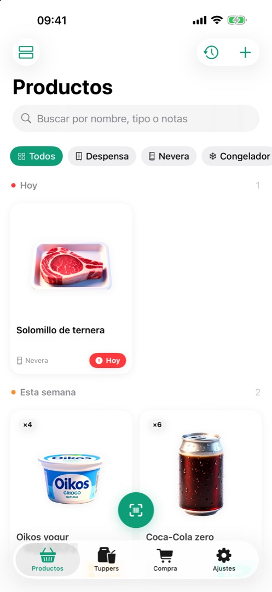
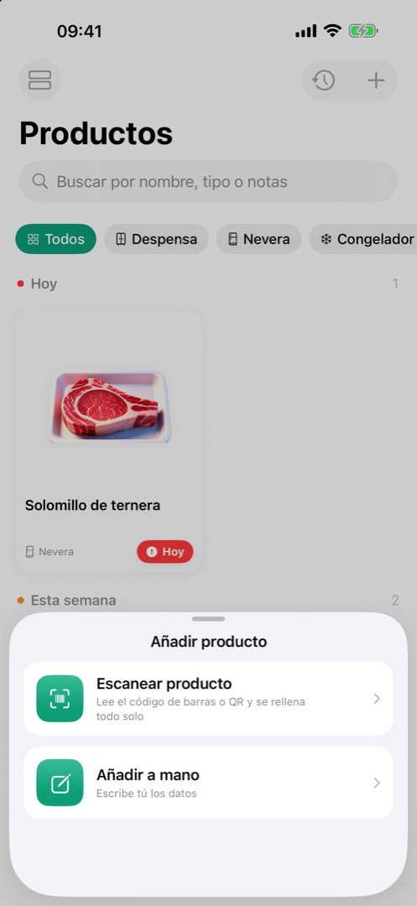
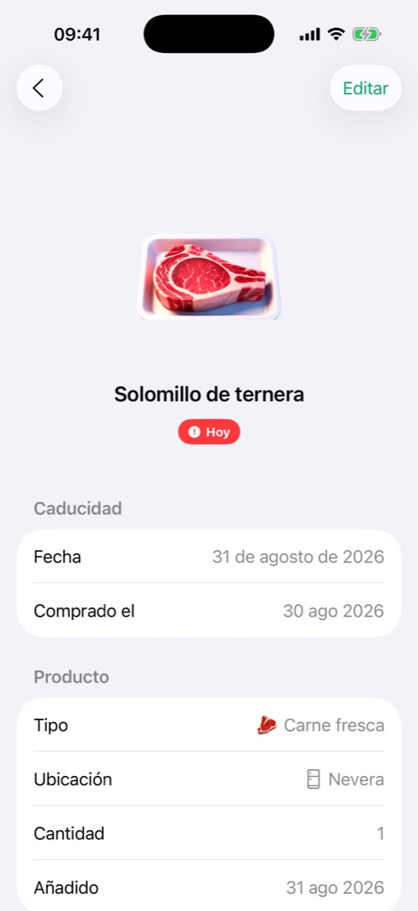
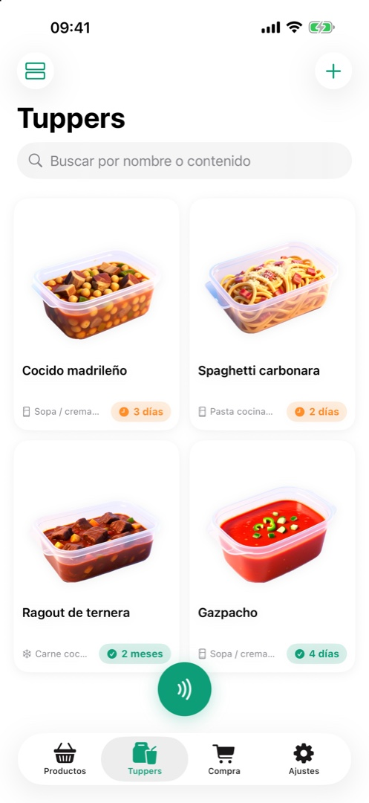
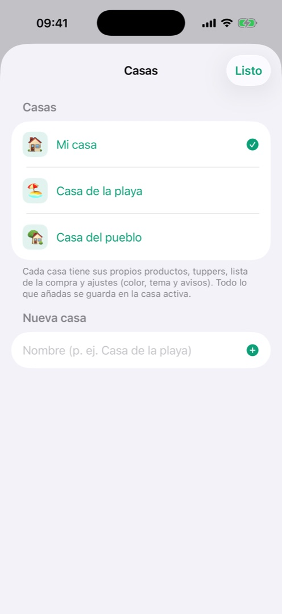
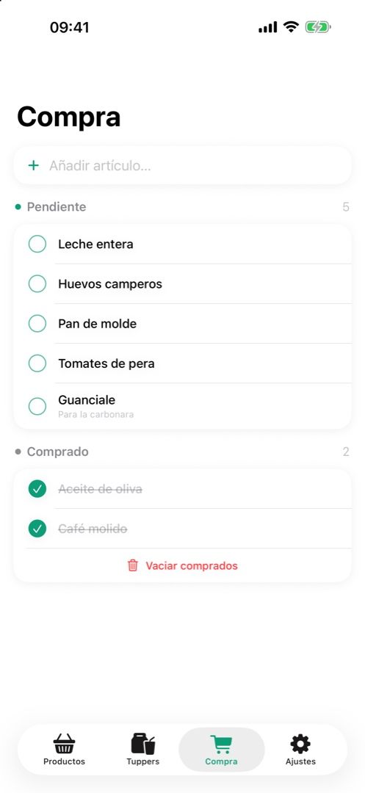
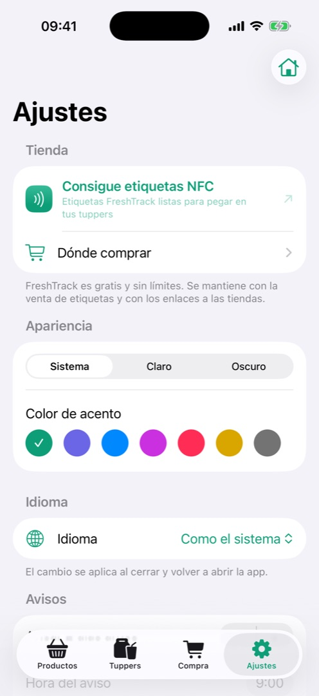

Despensa, nevera, congelador y tuppers bajo control. Escanea, deja que la IA de tu iPhone haga el resto y aprovecha lo que ya tienes.

Cada función pensada para una cosa: que no se te caduque nada y que añadirlo todo cueste segundos.
Apunta al código de barras y la ficha se rellena sola con la búsqueda online. Sin teclear.

Apple Intelligence interpreta el envase con la cámara y lo guarda todo, funcionando por completo en tu iPhone.

Pega una etiqueta NFC regrabable en la tapa, grábala desde la app y acerca el iPhone para saber qué hay dentro y cuándo caduca.

La de diario, la de la playa, la del pueblo. Cada casa con su despensa, sus tuppers, su lista de la compra y sus ajustes.

Lo que se consume pasa al historial, y del historial a la lista de la compra con un gesto. Al volver del súper, reescanea y el producto se re-añade solo con todos sus datos.

Un aviso al día con lo que está a punto de caducar, agrupado y sin spam. Tú eliges con cuánta antelación.

FreshTrack no recopila ningún dato. Todo vive en tu dispositivo y en tu iCloud privado; la IA funciona en local y la búsqueda de productos solo envía el código de barras, sin identificarte. La etiqueta de privacidad del App Store lo dice claro: «Datos no recopilados».
Lee la política de privacidad